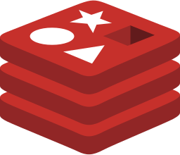
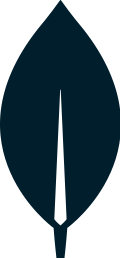
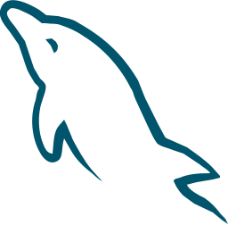
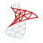

Built on what you trust
Open data stores. Open interfaces.
TRAPD stands on proven, open infrastructure — and speaks to the rest of your stack over plain HTTP, webhooks and a fully documented API.
ClickHouse
event store

Supabase
postgres + auth

Redis
streams + cache

MongoDB
documents

MySQL
relational

SQL Server
relational
SQLite
edge / homelab
REST & Webhooks
everything else